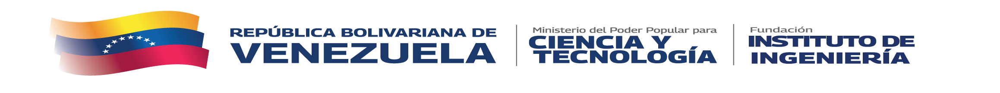
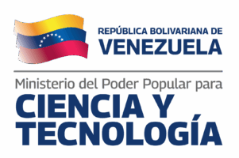
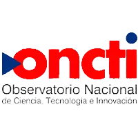
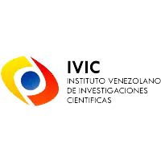
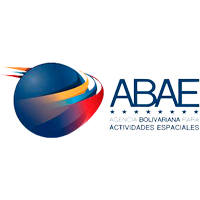
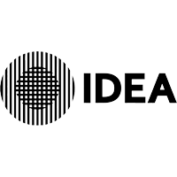
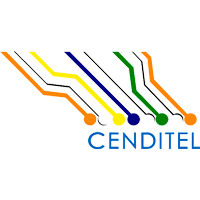
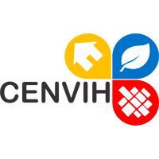

Seguridad Informática
Firma electrónica, certificación digital y ciberseguridad para instituciones y ciudadanos.
Solicitar firma
Servicio activo

10°29′N 66°54′O
CARACAS · VE
Ciencia, Tecnología e Innovación
Más de cuatro décadas generando conocimiento, desarrollando tecnología propia y fortaleciendo la capacidad industrial de la nación.
Quiénes Somos
La Fundación Instituto de Ingeniería para Investigación y Desarrollo Tecnológico (FII) es un centro de referencia nacional dedicado a generar soluciones científicas y tecnológicas de alto nivel, articulando academia, industria y Estado para fortalecer la soberanía tecnológica de Venezuela.
Nuestros Ejes
Cinco áreas estratégicas donde generamos conocimiento y desarrollo tecnológico de vanguardia.
Firma electrónica, certificación digital y ciberseguridad para instituciones y ciudadanos.
Diseño, manufactura y desarrollo de soluciones mecánicas para la industria nacional.
→ Bancos de ensayo propios
Investigación y caracterización de materiales para nuevas aplicaciones industriales.
→ Ensayos no destructivos
Cartografía, teledetección y sistemas de información geográfica al servicio del territorio.
→ Monitoreo satelital
Desarrollo de sistemas embebidos, automatización y soluciones electrónicas propias.
→ Instrumentación nacional
Lo que ofrecemos
Desarrollo de proyectos para instituciones públicas y privadas.
Solicitar informaciónTrabajamos junto a
Articulamos ciencia, tecnología e innovación junto a otras instituciones del Estado venezolano.







Actualidad
Geomática · 23/02/2026
El centro de Geomática despliega nuevas capacidades de teledetección para el monitoreo costero del territorio nacional.
Leer másCiencia · 11/09/2026
Avances internacionales en biotecnología médica que la comunidad científica venezolana sigue de cerca.
Leer másInvestigación · 11/09/2026
Especialistas debaten sobre el vínculo entre ciencia, comunidad y desarrollo territorial en Venezuela.
Leer másAlianza Institucional · 11/09/2026
Visita institucional para evaluar el progreso de los proyectos de investigación y desarrollo tecnológico en curso.
Leer másAlianza Internacional · 07/09/2026
Nuevo convenio bilateral para fortalecer el intercambio científico y tecnológico entre ambas naciones.
Leer másBiotecnología · 07/09/2026
Desarrollo local que posiciona a Venezuela en la frontera de la biotecnología aplicada a la industria.
Leer másTecnología de Materiales · 02/09/2026
El centro de Tecnología de Materiales amplía su oferta de certificación y control de calidad industrial.
Leer másSistemas y Electrónica · 26/08/2026
El centro de Sistemas y Electrónica presenta un nuevo instrumento de medición radiológica desarrollado íntegramente en el país.
Leer más